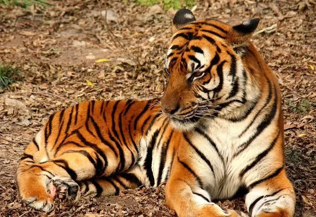

El león (Panthera leo) es un mamífero carnívoro de la familia de los félidos y una de las cinco
especies del género Panthera. Los leones salvajes viven en poblaciones cada vez más dispersas y
del África subsahariana (a excepción de las regiones selváticas de la costa del Atlántico y la
cuenca del Congo) y una pequeña zona del noroeste de India (una población en peligro crítico en
el parque nacional del Bosque de Gir y alrededores), habiendo desaparecido del resto de Asia del
Sur, Asia Occidental, África del Norte y la península balcánica en tiempos históricos